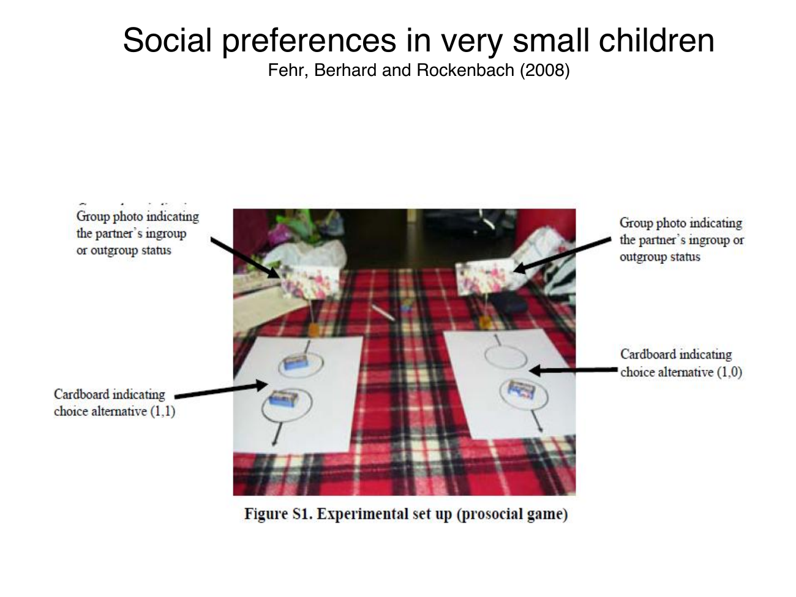
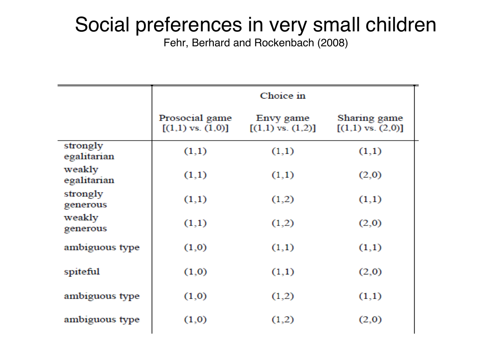

Derive childhood allocation patterns and bound age comparisons
Useful first: Solve and interpret ultimatum and dictator allocations, Calculate piecewise utility and interpret payoff preferences
Lesson outline
- 02IntroductionSee the main question, learning objectives and prerequisites.
- 03Key definitions and conceptsGet familiar with the important terms and notation.
- 04Social preferences in childhoodAre preferences fixed traits, or can social experience shape them?
- 05Worked exampleFollow a complete application of the reasoning.
- 06Practise the reasoningWork through written tasks, with optional support and solutions.
- 07Check your reasoning: an offline quizCheck your choices and see feedback without a connection.
- 08Check your understandingReview the key distinctions and check what you can explain.
- 09Test yourself laterTry another prepared question before rereading.
- 10SourcesFind the materials and limits behind the lesson.
Introduction
In this lesson, derive childhood allocation patterns and bound age comparisons.
2.1 What you’ll learn
- Derive the three sweets game comparisons, classify a full observed pattern with the source table, and qualify ingroup age/sample inference.
2.2 Before you begin
- Solve and interpret ultimatum and dictator allocations
- Calculate piecewise utility and interpret payoff preferences
Check the foundations
In a dictator allocation, who controls the outcome and can the receiver veto? If own payoff is identical across two options, does pure self-interest strictly rank them?
Reveal foundation explanation
The allocator controls it without a receiver veto (O002); identical own payoff gives a self-regarding tie, not a strict selection (O003).
Key definitions and concepts
- Prosocial choice task: Own sweets stay fixed while the partner’s payoff changes.
- Costly sharing: Choosing equal sharing sacrifices own sweets relative to the selfish alternative.
- Behavioral classification: A label for observed choices under the stated task, not a uniquely identified permanent utility.
Social preferences in childhood
Are preferences fixed traits, or can social experience shape them? This is separate from asking whether preferences are selfish: stable preferences could be other-regarding, and changing preferences could remain selfish.
Compare a traditional stability assumption, illustrated by Stigler and Becker (1977, p. 76), with a social-environment view attributed to Peter Hedström. Those positions motivate empirical questions rather than establish either answer by assertion.

The map follows the framing, experimental design and results. The core foundation is to derive what each payoff comparison identifies before attaching a preference label to a child.
4.1 Three games distinguish different motives
Fehr, Bernhard and Rockenbach (2008) use anonymous, one-shot allocations of sweets between a child and another child. Consider approximately 250 Swiss children aged 3–8;
the consulted Nature paper reports 229 analysed children, so the lecture's count is approximate rather than an exact sample size. Partners are either classmates from the same school/kindergarten (ingroup) or unknown children from another one (outgroup).
The photo shows allocation cards and the group-photo cue identifying partner status; the child does not bargain face to face with the partner.

Write a payoff as (own sweets, partner's sweets). The source's tasks are:
| Game | Available allocations | What changes? |
|---|---|---|
| Costless prosocial/sharing | \((1,1)\) or \((1,0)\) | Own sweets stay fixed; helping the partner also removes advantageous inequality. |
| Costless envy | \((1,1)\) or \((1,2)\) | Own sweets stay fixed; equality conflicts with increasing the partner's payoff. |
| Costly sharing | \((1,1)\) or \((2,0)\) | Equality and helping the partner require sacrificing one own sweet. |
A purely selfish child is indifferent between the two options in the first two games because own payoff is one in either case; selfishness does not strictly predict one tied option.
In costly sharing, selfishness strictly predicts \((2,0)\). A strongly egalitarian child selects equality in all three;
a sufficiently altruistic child selects the higher partner payoff, including accepting a cost to share. Spite instead favours reducing the other's payoff.
Strength matters when own payoff must be sacrificed.
4.2 Read the whole choice pattern
The source table exhausts the eight combinations of two choices in three games:
| Source classification | Prosocial game | Envy game | Sharing game |
|---|---|---|---|
| Strongly egalitarian | \((1,1)\) | \((1,1)\) | \((1,1)\) |
| Weakly egalitarian | \((1,1)\) | \((1,1)\) | \((2,0)\) |
| Strongly generous | \((1,1)\) | \((1,2)\) | \((1,1)\) |
| Weakly generous | \((1,1)\) | \((1,2)\) | \((2,0)\) |
| Ambiguous type | \((1,0)\) | \((1,1)\) | \((1,1)\) |
| Spiteful | \((1,0)\) | \((1,1)\) | \((2,0)\) |
| Ambiguous type | \((1,0)\) | \((1,2)\) | \((1,1)\) |
| Ambiguous type | \((1,0)\) | \((1,2)\) | \((2,0)\) |
These are the source's behavioural classifications, not infallible personality diagnoses. Because the selfish benchmark permits either costless choice, a child choosing \((2,0)\) in sharing could also produce several of these costless patterns without a strict selfish preference among them.
One cannot identify a unique utility function from one tied choice. Consistency, understanding, context and measurement also matter.
The four Sli.do pages ask students to predict inequality-averse, altruistic, spiteful and selfish choices; no poll results are supplied, so the reasoning above supplies model predictions rather than invented class responses.

4.3 The age comparison is conditional on the partner group
The lecture's repeated age figure concerns ingroup partners. The proportion making the egalitarian choice in costly sharing rises from about 9% at ages 3–4 to about 22% at 5–6 and 45% at 7–8.
The costless prosocial and envy choices reach roughly 78% and 80% at 7–8. These graphical readings show why Consider young children as mostly selfish and older children as more egalitarian, but the costless-game ties mean that label should not be treated as direct proof of a unique motive for every young child.
Even among the oldest group, fewer than half choose costly equality.

This is a cross-sectional age comparison, not a panel following the same children as they grow. It supports an age-related pattern, not a causal estimate of ageing or a particular upbringing.
Its ingroup caption also prevents generalizing the displayed percentages to unknown outgroup children. The lecture's statement that later development includes efficiency concerns and altruism is attributed only to unspecified “different studies”;
no unprovided later-age evidence or effect size is certified here.
Bounded primary check: Fehr, Bernhard and Rockenbach, “Egalitarianism in young children,” Nature 454 (2008), 1079–1083, publisher proof, and methods on p. 6, verifies the three tasks, sample count, anonymous one-shot design and ingroup interpretation. The proof distinguishes costless choices from costly sharing;
numerical source figures remain tied to their displayed partner condition. This is supporting verification, not ingestion of the paper's entire additional outgroup analysis.
The next question is whether family background is merely associated with preferences or whether changing a child's social environment can alter measured prosociality. Distinguishing those two claims is the foundation of the mentoring application. Social Environment and Mentoring
Worked example
Prompt: In the source’s own/partner-sweets order, the prosocial game offers \((1,1)\)/\((1,0)\), envy game \((1,1)\)/\((1,2)\), sharing game \((1,1)\)/\((2,0)\). A hypothetical child chooses \([(1, 1), (1, 1), (1, 1)]\) in that order.
Derive what varies/what is held fixed in each game, the selfish indifference/strict-choice predictions, and the strong-equality/generosity/spite interpretations. Give the table’s classification for this observed pattern and explain whether it uniquely identifies utility or a permanent personality trait.
Interpret the age graph’s about \(9\%,22\%,45\%\) costly-equality pattern, ingroup restriction, anonymous one-shot design and \(229\) analysed versus approximately \(250\) sample wording without turning age association into causal development.
Solution: Own payoff stays \(1\) in the first two games; changing the partner’s payoff also changes equality.
In the third, selecting \((1,1)\) costs one own sweet relative to \((2,0)\). Pure self-interest is indifferent over the first two pairs and strictly prefers \((2,0)\) in sharing.
Strong egalitarianism selects equality throughout; sufficiently strong generosity raises the partner’s payoff even when costly, and spite favours reducing it (strength matters with own costs).
The source-table label for \([(1, 1), (1, 1), (1, 1)]\) is “strongly egalitarian.” The costly-equality choice sacrifices an own sweet and therefore does not follow from the pure-selfish strict sharing prediction. A behavioural table classification is not a unique utility/personality diagnosis;
comprehension, context and ties matter. The actual tasks are anonymous one-shot incentivized sweets allocations, with ingroup/outgroup cues rather than face-to-face bargaining.
The displayed age figure is ingroup-only, roughly \(9\%\), \(22\%\), \(45\%\) costly equality across \(3\text{–}4\), \(5\text{–}6\), \(7\text{–}8\); even the oldest mean is below one half.
It compares different children by age, not a panel or randomized upbringing, so neither causal ageing nor a universal outgroup pattern follows. The primary paper reports \(229\) analysed children;
the slide’s approximately \(250\) is approximate. Unspecified later-age studies and empty poll prompts are not certified results.
Practise the reasoning
Write your reasoning before revealing an explanation. Begin with support, then apply the ideas to another situation.
6.1 Written exercise 1
In the source’s own/partner-sweets order, the prosocial game offers \((1,1)\)/\((1,0)\), envy game \((1,1)\)/\((1,2)\), sharing game \((1,1)\)/\((2,0)\).
Solve the following:
- A hypothetical child chooses \([(1, 1), (1, 1), (2, 0)]\) in that order.
- Derive what varies/what is held fixed in each game, the selfish indifference/strict-choice predictions, and the strong-equality/generosity/spite interpretations.
- Give the table’s classification for this observed pattern and explain whether it uniquely identifies utility or a permanent personality trait.
- Interpret the age graph’s about \(9\%,22\%,45\%\) costly-equality pattern, ingroup restriction, anonymous one-shot design and \(229\) analysed versus approximately \(250\) sample wording without turning age association into causal development.
Show a hint
Pause before calculating or choosing an explanation:
- What quantities, actors or outcomes are being compared? Write their roles, units and dates beside them.
- Which condition decides whether the relationship applies? Check the relevant definition before using a formula or classifying the case.
- What would have to remain fixed for your comparison to be meaningful? Work through one link in the reasoning at a time.
- How could you check the direction, boundary case or alternative explanation before stating your conclusion?
A local draft for your own study.
Reveal explanation
Solution: Own payoff stays \(1\) in the first two games; changing the partner’s payoff also changes equality.
In the third, selecting \((1,1)\) costs one own sweet relative to \((2,0)\). Pure self-interest is indifferent over the first two pairs and strictly prefers \((2,0)\) in sharing.
Strong egalitarianism selects equality throughout; sufficiently strong generosity raises the partner’s payoff even when costly, and spite favours reducing it (strength matters with own costs).
The source-table label for \([(1, 1), (1, 1), (2, 0)]\) is “weakly egalitarian.” This pattern is compatible with the selfish benchmark too because its two costless choices are tied and sharing keeps \(2\) own sweets. A behavioural table classification is not a unique utility/personality diagnosis;
comprehension, context and ties matter. The actual tasks are anonymous one-shot incentivized sweets allocations, with ingroup/outgroup cues rather than face-to-face bargaining.
The displayed age figure is ingroup-only, roughly \(9\%\), \(22\%\), \(45\%\) costly equality across \(3\text{–}4\), \(5\text{–}6\), \(7\text{–}8\); even the oldest mean is below one half.
It compares different children by age, not a panel or randomized upbringing, so neither causal ageing nor a universal outgroup pattern follows. The primary paper reports \(229\) analysed children;
the slide’s approximately \(250\) is approximate. Unspecified later-age studies and empty poll prompts are not certified results.
6.2 Written exercise 2
In the source’s own/partner-sweets order, the prosocial game offers \((1,1)\)/\((1,0)\), envy game \((1,1)\)/\((1,2)\), sharing game \((1,1)\)/\((2,0)\).
Solve the following:
- A hypothetical child chooses \([(1, 1), (1, 2), (1, 1)]\) in that order.
- Derive what varies/what is held fixed in each game, the selfish indifference/strict-choice predictions, and the strong-equality/generosity/spite interpretations.
- Give the table’s classification for this observed pattern and explain whether it uniquely identifies utility or a permanent personality trait.
- Interpret the age graph’s about \(9\%,22\%,45\%\) costly-equality pattern, ingroup restriction, anonymous one-shot design and \(229\) analysed versus approximately \(250\) sample wording without turning age association into causal development.
A local draft for your own study.
Reveal explanation
Solution: Own payoff stays \(1\) in the first two games; changing the partner’s payoff also changes equality.
In the third, selecting \((1,1)\) costs one own sweet relative to \((2,0)\). Pure self-interest is indifferent over the first two pairs and strictly prefers \((2,0)\) in sharing.
Strong egalitarianism selects equality throughout; sufficiently strong generosity raises the partner’s payoff even when costly, and spite favours reducing it (strength matters with own costs).
The source-table label for \([(1, 1), (1, 2), (1, 1)]\) is “strongly generous.” The costly-equality choice sacrifices an own sweet and therefore does not follow from the pure-selfish strict sharing prediction. A behavioural table classification is not a unique utility/personality diagnosis;
comprehension, context and ties matter. The actual tasks are anonymous one-shot incentivized sweets allocations, with ingroup/outgroup cues rather than face-to-face bargaining.
The displayed age figure is ingroup-only, roughly \(9\%\), \(22\%\), \(45\%\) costly equality across \(3\text{–}4\), \(5\text{–}6\), \(7\text{–}8\); even the oldest mean is below one half.
It compares different children by age, not a panel or randomized upbringing, so neither causal ageing nor a universal outgroup pattern follows. The primary paper reports \(229\) analysed children;
the slide’s approximately \(250\) is approximate. Unspecified later-age studies and empty poll prompts are not certified results.
6.3 Written exercise 3
In the source’s own/partner-sweets order, the prosocial game offers \((1,1)\)/\((1,0)\), envy game \((1,1)\)/\((1,2)\), sharing game \((1,1)\)/\((2,0)\).
Solve the following:
- A hypothetical child chooses \([(1, 1), (1, 2), (2, 0)]\) in that order.
- Derive what varies/what is held fixed in each game, the selfish indifference/strict-choice predictions, and the strong-equality/generosity/spite interpretations.
- Give the table’s classification for this observed pattern and explain whether it uniquely identifies utility or a permanent personality trait.
- Interpret the age graph’s about \(9\%,22\%,45\%\) costly-equality pattern, ingroup restriction, anonymous one-shot design and \(229\) analysed versus approximately \(250\) sample wording without turning age association into causal development.
A local draft for your own study.
Reveal explanation
Solution: Own payoff stays \(1\) in the first two games; changing the partner’s payoff also changes equality.
In the third, selecting \((1,1)\) costs one own sweet relative to \((2,0)\). Pure self-interest is indifferent over the first two pairs and strictly prefers \((2,0)\) in sharing.
Strong egalitarianism selects equality throughout; sufficiently strong generosity raises the partner’s payoff even when costly, and spite favours reducing it (strength matters with own costs).
The source-table label for \([(1, 1), (1, 2), (2, 0)]\) is “weakly generous.” This pattern is compatible with the selfish benchmark too because its two costless choices are tied and sharing keeps \(2\) own sweets. A behavioural table classification is not a unique utility/personality diagnosis;
comprehension, context and ties matter. The actual tasks are anonymous one-shot incentivized sweets allocations, with ingroup/outgroup cues rather than face-to-face bargaining.
The displayed age figure is ingroup-only, roughly \(9\%\), \(22\%\), \(45\%\) costly equality across \(3\text{–}4\), \(5\text{–}6\), \(7\text{–}8\); even the oldest mean is below one half.
It compares different children by age, not a panel or randomized upbringing, so neither causal ageing nor a universal outgroup pattern follows. The primary paper reports \(229\) analysed children;
the slide’s approximately \(250\) is approximate. Unspecified later-age studies and empty poll prompts are not certified results.
6.4 Another chance to practise
A child picks equality when own payoff stays 1.
Solve the following:
- Does that alone rule out pure self-interest?
A local draft for your own study.
Reveal explanation
No. Pure self-interest is indifferent between the equal and unequal costless options. Costly sharing provides a stricter sacrifice comparison, and complete choice patterns still require cautious interpretation.
Check your reasoning: an offline quiz
Choose one answer per question. Check individual answers or check the whole quiz. Each option includes feedback on the reasoning, and everything works offline.
Reveal explanation
Own payoff falls from 2 to 1.
Reveal explanation
Only own sweets matter in this benchmark; they differ only in the third comparison.
Reveal explanation
Interpret the specified behavioral table while preserving identification and age-comparison limits.
Check your understanding
- Derive the three sweets game comparisons, classify a full observed pattern with the source table, and qualify ingroup age/sample inference.
Test yourself later
Return to these questions after a break, before rereading the explanation. Use a question you have not just viewed.
9.1 Review question 1
In the source’s own/partner-sweets order, the prosocial game offers \((1,1)\)/\((1,0)\), envy game \((1,1)\)/\((1,2)\), sharing game \((1,1)\)/\((2,0)\).
Solve the following:
- A hypothetical child chooses \([(1, 0), (1, 1), (2, 0)]\) in that order.
- Derive what varies/what is held fixed in each game, the selfish indifference/strict-choice predictions, and the strong-equality/generosity/spite interpretations.
- Give the table’s classification for this observed pattern and explain whether it uniquely identifies utility or a permanent personality trait.
- Interpret the age graph’s about \(9\%,22\%,45\%\) costly-equality pattern, ingroup restriction, anonymous one-shot design and \(229\) analysed versus approximately \(250\) sample wording without turning age association into causal development.
A local draft for your own study.
Reveal explanation
Solution: Own payoff stays \(1\) in the first two games; changing the partner’s payoff also changes equality.
In the third, selecting \((1,1)\) costs one own sweet relative to \((2,0)\). Pure self-interest is indifferent over the first two pairs and strictly prefers \((2,0)\) in sharing.
Strong egalitarianism selects equality throughout; sufficiently strong generosity raises the partner’s payoff even when costly, and spite favours reducing it (strength matters with own costs).
The source-table label for \([(1, 0), (1, 1), (2, 0)]\) is “spiteful.” This pattern is compatible with the selfish benchmark too because its two costless choices are tied and sharing keeps \(2\) own sweets. A behavioural table classification is not a unique utility/personality diagnosis;
comprehension, context and ties matter. The actual tasks are anonymous one-shot incentivized sweets allocations, with ingroup/outgroup cues rather than face-to-face bargaining.
The displayed age figure is ingroup-only, roughly \(9\%\), \(22\%\), \(45\%\) costly equality across \(3\text{–}4\), \(5\text{–}6\), \(7\text{–}8\); even the oldest mean is below one half.
It compares different children by age, not a panel or randomized upbringing, so neither causal ageing nor a universal outgroup pattern follows. The primary paper reports \(229\) analysed children;
the slide’s approximately \(250\) is approximate. Unspecified later-age studies and empty poll prompts are not certified results.
9.2 Review question 2
In the source’s own/partner-sweets order, the prosocial game offers \((1,1)\)/\((1,0)\), envy game \((1,1)\)/\((1,2)\), sharing game \((1,1)\)/\((2,0)\).
Solve the following:
- A hypothetical child chooses \([(1, 0), (1, 2), (1, 1)]\) in that order.
- Derive what varies/what is held fixed in each game, the selfish indifference/strict-choice predictions, and the strong-equality/generosity/spite interpretations.
- Give the table’s classification for this observed pattern and explain whether it uniquely identifies utility or a permanent personality trait.
- Interpret the age graph’s about \(9\%,22\%,45\%\) costly-equality pattern, ingroup restriction, anonymous one-shot design and \(229\) analysed versus approximately \(250\) sample wording without turning age association into causal development.
A local draft for your own study.
Reveal explanation
Solution: Own payoff stays \(1\) in the first two games; changing the partner’s payoff also changes equality.
In the third, selecting \((1,1)\) costs one own sweet relative to \((2,0)\). Pure self-interest is indifferent over the first two pairs and strictly prefers \((2,0)\) in sharing.
Strong egalitarianism selects equality throughout; sufficiently strong generosity raises the partner’s payoff even when costly, and spite favours reducing it (strength matters with own costs).
The source-table label for \([(1, 0), (1, 2), (1, 1)]\) is “ambiguous type.” The costly-equality choice sacrifices an own sweet and therefore does not follow from the pure-selfish strict sharing prediction. A behavioural table classification is not a unique utility/personality diagnosis;
comprehension, context and ties matter. The actual tasks are anonymous one-shot incentivized sweets allocations, with ingroup/outgroup cues rather than face-to-face bargaining.
The displayed age figure is ingroup-only, roughly \(9\%\), \(22\%\), \(45\%\) costly equality across \(3\text{–}4\), \(5\text{–}6\), \(7\text{–}8\); even the oldest mean is below one half.
It compares different children by age, not a panel or randomized upbringing, so neither causal ageing nor a universal outgroup pattern follows. The primary paper reports \(229\) analysed children;
the slide’s approximately \(250\) is approximate. Unspecified later-age studies and empty poll prompts are not certified results.
Sources
Show materials and lesson scope
- L4 BE_formation IES 2026.pdf, physical PDF pp. 1–4
- L4 BE_formation IES 2026.pdf, physical PDF pp. 2–16
- L4 BE_formation IES 2026.pdf, physical PDF pp. 6–7
- L4 BE_formation IES 2026.pdf, physical PDF pp. 6, 8–13
- L4 BE_formation IES 2026.pdf, physical PDF pp. 8–13
- L4 BE_formation IES 2026.pdf, physical PDF pp. 14–15
- L4 BE_formation IES 2026.pdf, physical PDF pp. 14–16
- L4 BE_formation IES 2026.pdf, physical PDF pp. 16–18
Numerical and contextual illustrations are hypothetical unless explicitly described as a reported result. Historical data, model assumptions and unresolved source differences retain their stated limits.
These exercises are for self-study. Viewing a prepared item or solution may make that item unsuitable as a fresh check in a tutor chat. This page does not record an assessed learning result.